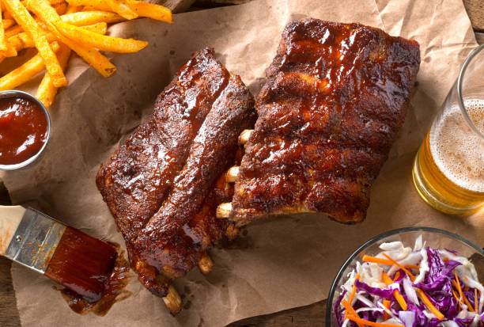

Home
Fall Off The Bone Ribs At Home

A section of slow cooked pork carcass drenched in sauce
Big Flavor At Home Without the Big Restaurant Price
Have y'all seen the price of a full rack at Chili's lately?
It's completely insane considering how many unedible bones you have to pay for.
This recipe is designed to make the same great ribs at home, wihout a smoker (You think Chili's smokes their ribs?)
at a much more respectable cost per plate.
The Ingredients
- 1 full rack of Pork Back Ribs
- 2-3 tblsp of Avocado Oil
- 1 Cup Apple Cider Vinegar
- Pork Rub of Choice
- BBQ Sauce of Choice
- 1 Diced Green Onion
The Preparation
- Preheat oven to 350° F
- Coat ribs in Avacado Oil and apply seaoning rub liberally
- Place ribs on a large baking sheet with rack
- Add Apple Cider Vinegar to baking pan
- Cover pan tightly with aluminum foil and bake for 75 mins or until meat begins to pull from the bones
- Preheat grill on medium heat before pulling ribs from oven
- Pull ribs from oven, discard apple cider vinegar
- Place ribs on grill, meat-side-down just long enough to get some good grill marks
- Flip ribs and baste with BBQ sauce
*NOTE: The ribs should be finished cooking when they come out of the oven. The grill step is just for color and flavor, so baste unitl you think it's good.
- Pull from grill, garnish with a sprinkle of green onions
- Enjoy!!